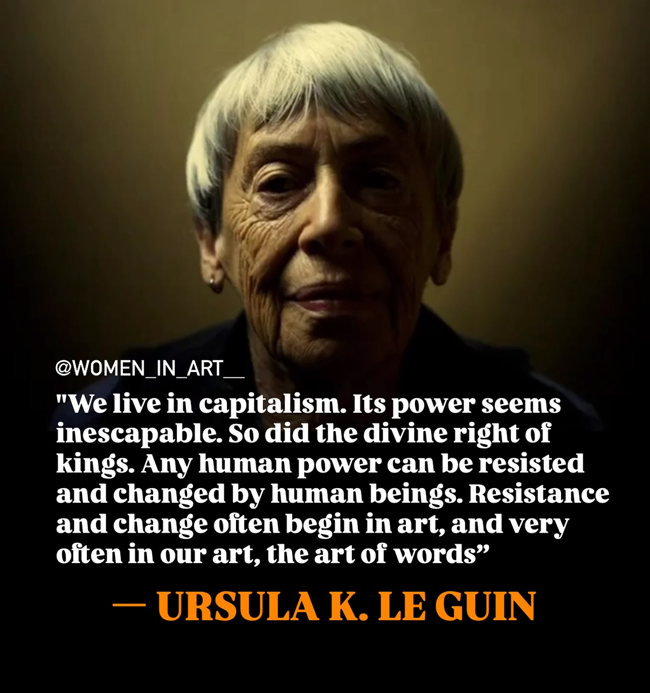

The formative book of a good friend in his late teens and early 20s.
https://en.wikipedia.org/wiki/Ursula_K._Le_Guin
“The creative adult is the child who survived.”
-- apparently from No Time to Spare

check the source